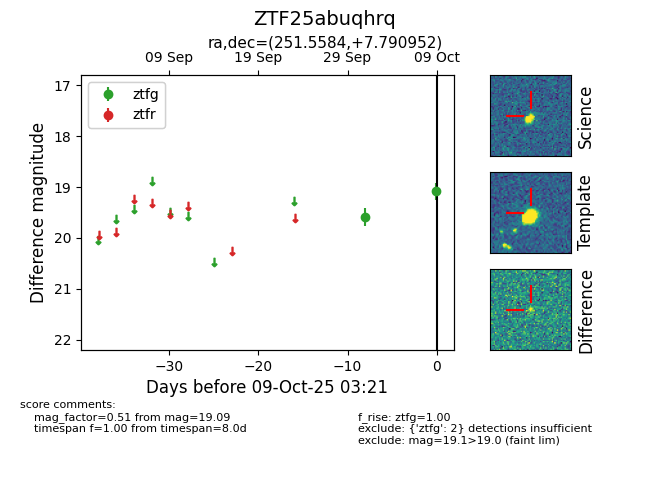

FINK: ZTF25abuqhrq
Lasair: ZTF25abuqhrq
ALeRCE: ZTF25abuqhrq
ZTF25abuqhrq (ztf,fink)
equatorial (ra, dec) = (251.5584,+7.79095)
galactic (l, b) = (25.2580,+31.32724)

last ztfg=19.09
2 ztfg detections